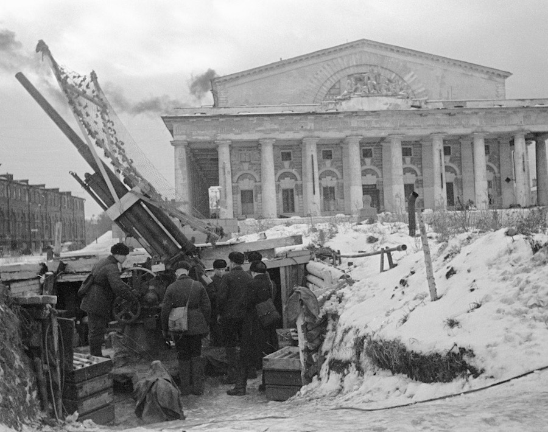

Ленінград — горад герой!
Ленінград быў асаблівым горадам для СССР, таму ў планах гітлераўскага камандавання было поўнае знішчэнне горада і
вынішчэньне яго насельніцтва.

Разлютаваныя баі на подступах да Ленінграда пачаліся 10 ліпеня 1941 года. Колькасную перавагу першапачаткова было на
баку суперніка: амаль у 2,5 разы больш салдат, у 10 разоў - самалётаў, у 1,2 разы - танкаў і амаль у 6 разоў -
мінамётаў. У выніку 8 верасня 1941 года гітлераўцам удалося захапіць Шлісельбург і такім чынам ўзяць пад свой кантроль
выток Нявы. У выніку Ленінград быў блакаваны з сушы (адрэзаны ад Вялікай зямлі). Гітлераўцы разлічвалі голадам прымусіць
горад да здачы.
1,5 ТЫС.
ленінградцаў штодня выходзілі на работы па будаўніцтву абарончых збудаванняў
35 КМ
барыкад і ўмацаванняў пабудавана гараджанамі

Прарыў блакады Ленінграда адбыўся 18 студзеня 1943 году. Яго ажыццяўлялі войскі Волхаўскага і Ленінградскага франтоў у
ходзе аперацыі «Іскра». Паміж лініяй фронту і Ладажскім возерам быў утвораны калідор 8-11 км шырынёй. А праз год
Ленінград быў цалкам вольны ад блакады. 22 снежня 1942 году ўказам Прэзідыума ВС СССР была заснаваны медаль «За абарону
Ленінграда», якой ўдастоіліся каля 1,5 млн абаронцаў горада. Упершыню горадам-героем Ленінград быў названы ў загадзе
Сталіна ад 1 мая 1945 года. У 1965 годзе гэтае званне яму было прысвоена афіцыйна.